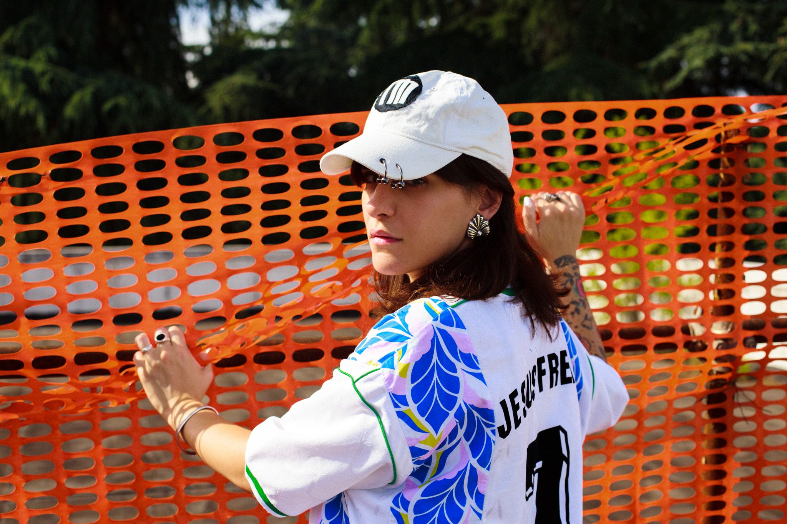
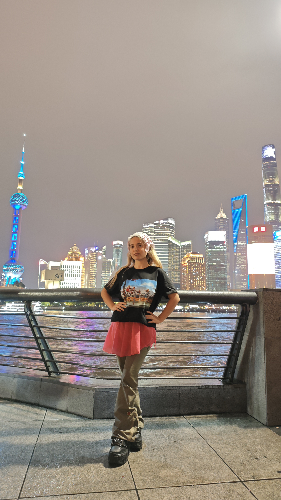
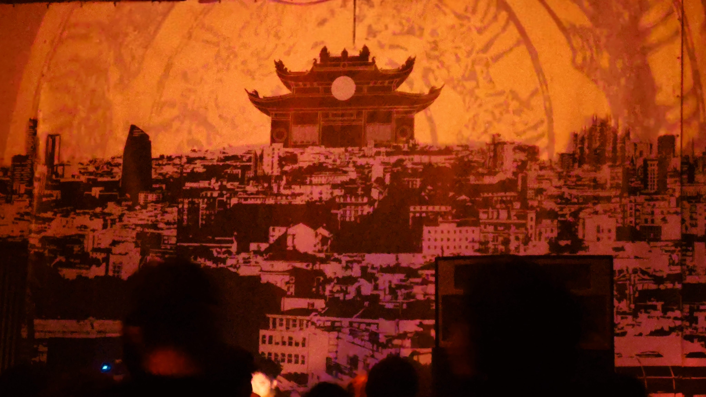
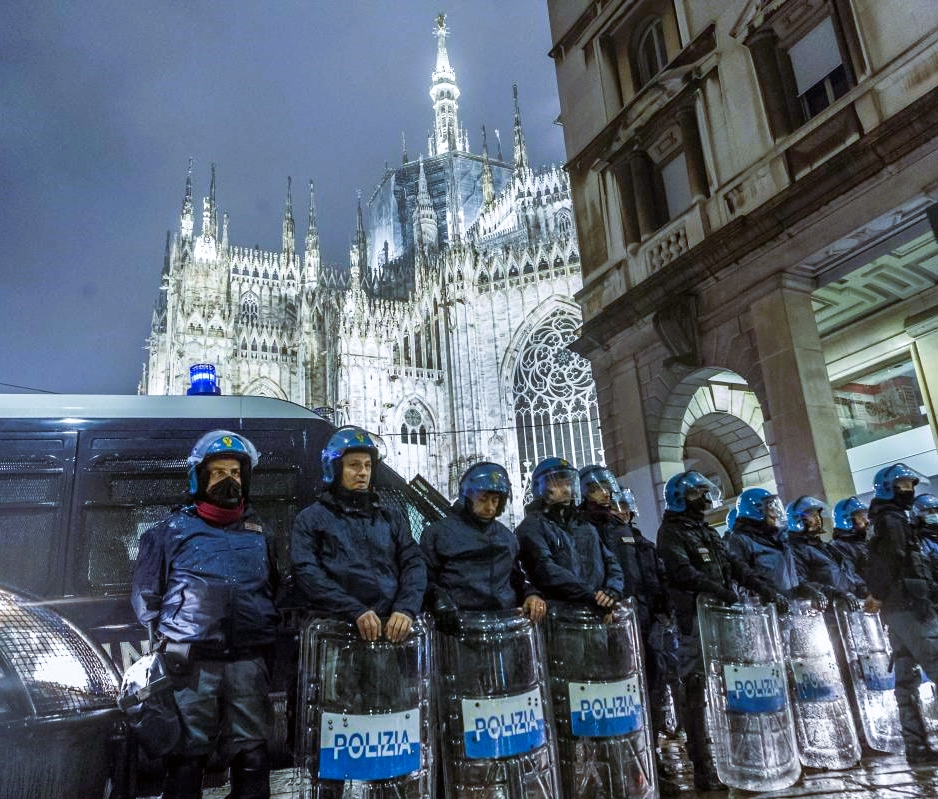
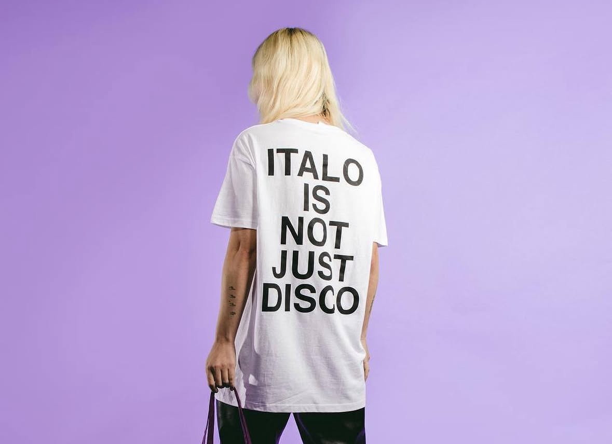
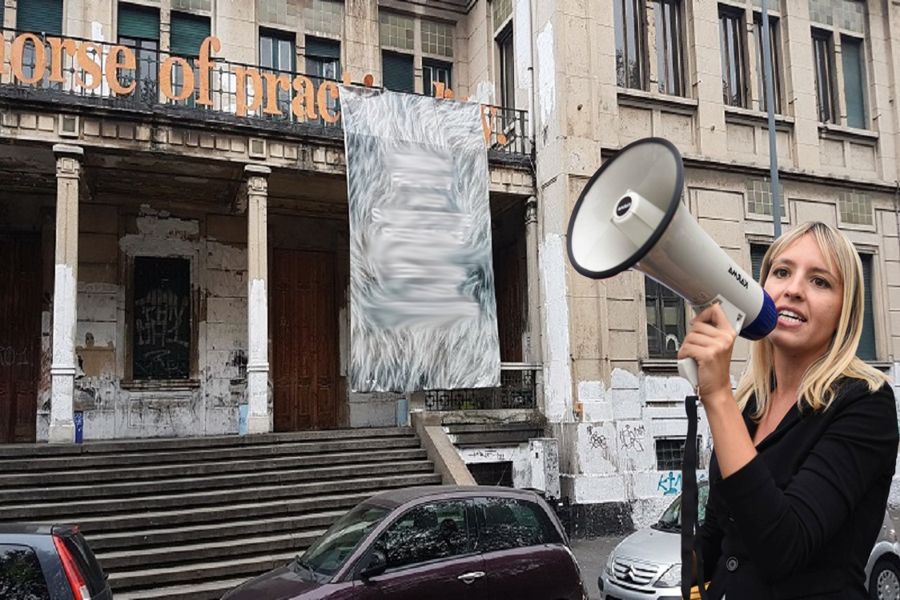
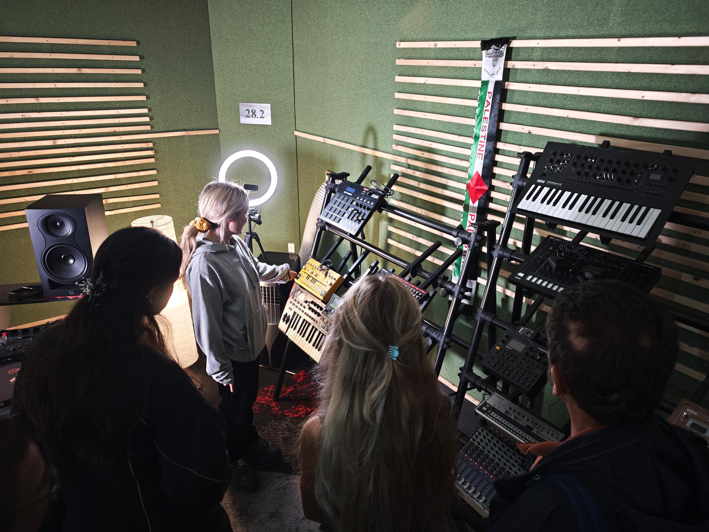

Against soulless wine — who are the resistant wine-growers
At Tempio di Bacco, the artisanal wine-growers' fair hosted by Tempio del Futuro Perduto, wine becomes once again a story of people, land, and resistance to the market that stripped it of its soul.

The political, techno dance of Urban Dancing Prophets
Dance, techno and nocturnal rituals: inside the work of the resident collective of Sala Nera at Tempio del Futuro Perduto, who use the body as a tool for artistic research, social transformation and community-building.
Commercial discos don't make club culture
The crisis of the big commercial discos isn't a passing phase, but the symptom of an economic and cultural model running out of steam, now trying to regenerate itself by appropriating clubbing, techno and hard techno.

From Sardinia to Berghain, via il Tempio: an interview with Elisa Bee
From her first nights out in Sardinia to Europe's most prestigious dancefloors, the artistic and personal journey that made her one of the most recognizable figures in Europe's new techno scene.

Modern festivals: a declining funfair, or a resource for the land?
A reflection on the ownership of Europe's major music festivals, the exploitation of the territories that host them, and Italian cultural provincialism.

From Puglia, alone, by bus, chasing a dream: an interview with Dolce Potente
Starting from the working-class neighborhoods of Bari to recent tours in China, Europe and Italy. Dolce Potente is becoming, day by day, a reference point for Italy's new techno scene.

Europe's first 100% Asian electronic club: Oriental Techno Club in Milan
An interview with the collective that turned Asian electronic culture into a real bridge between Asia and Europe, through music, visual arts, performance and ritual.

Milan's security problems aren't an election meme. And maybe we're looking in the wrong direction.
Between the Interior Ministry, the Prefect, the City Council and the Security Commission: who actually bears responsibility for urban security in Milan, beyond the social-media slogan against the mayor.
The left used to be the people of books and militancy. Today it's the audience of reels and carousels.
From magazines to podcasts, from social-media lawyers to activist-brands: the left has replaced political thought with reassuring content, serial outrage and individual careers perfectly integrated into the establishment.

Techno is now sung in Italian. It's a new genre called Italo Ghetto.
After forty years of nostalgia and imported foreign sounds, a new scene tries to build an entirely Italian techno language: dialects, singer-songwriting, rave culture and popular imagery on the dancefloor.

Italy's social centers are dead. Someone should have said so.
From the Genoa G8 to Macao, from Leoncavallo to Tempio del Futuro Perduto: what's left today of the movement that for thirty years embodied Italian political and cultural resistance.

The world's first techno school is in Italy
From Milan, a unique project: thousands of students, free classes, cultural research, workshops with international artists, and a radical idea that turns electronic music from mere entertainment into cultural heritage.